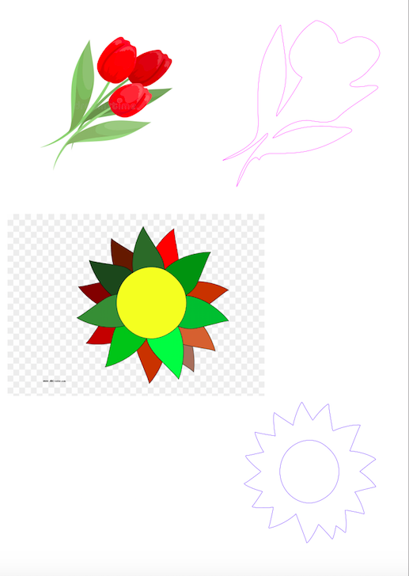

Inkscape, Fusion 360 and Onshape
This week, I tried to learn different procedures in Inkscape. The following details some of the new skills I learned with examples of work produced.
Converting a bitmap picture into a vector format
I began by trying the example on the site. I followed the steps to trace the bitmap of the paddle sketch picture into a vector. I played around with the features in the dialog box to see how the picture would change. I changed the line color to red as shown below.
I then tried coverting some other pictures from google into vector formats. I first converted them to bitmaps and then repeated the above steps to trace the outlines of each picture and create vectors. Below are pictures of the bitmaps and the corresponding vectors.
Flower Pictures to Vector Formats

Using GIMP for processing a photograph for vinyl cutting
I imported an image of my friend and I into GIMP. Under color menu, I chose threshold option. Adjusted it to get the color I wanted. I applied the blur Gaussian filter. Then, I applied threshold again to make the borders sharper and get the level of detail I wanted. I ended up with a black-and-white png for vinyl-cutting.
My image that I turned into a B&W png to vinyl-cut

Next Steps
- Continue working on site and fix page layout
- Make sure all page links work on nav bar
- Fix Arduino download errors
- Try making Blink program work
- Build more complex circuits
The Assignment
This week's assignment was to create a press fit construction kit using a laser cutter. I have never used a laser cutter before so this was all a new learning experience for me. I decided to focus more on the design aspect of this assignment as I had also never used a CAD software before. For this course, I will be using a web-based CAD software called Onshape. I had issues downloading and connecting to other sofwtare such as Fusion360 and found that Onshape had all the functionalities I would possibly need for this class. I began by completing the tutorial design project detailed on the course page. Below is an outline of this process.
Sample component design
I first began by sketching a sample component in order to become more familiar with the functionalities of Onshape. I carried out the following steps in order to create a simple 3D press-fit component.
- First, I changed the document units to mm. I then created a new sketch on the top plane. I drew a corner point square of 40mm x 40mm. I offsetted the rectangular boundary by 10mm to create a smaller inner square of 20mm x 20mm.
- I created vertical and horizontal construction lines across the midpoints of the outer rectangular boundary. I offsetted these by 1.5mm to factor in the width of the hypothetical material I may use. I then mirrored these offsetted lines against the original midpoint lines.
The image below shows the entire complete sketch with the dimensions I chose:
- After completing the 2D sketch of the simple component, I extruded the design to create a 3D representation to create the notches for other pieces to fit into. I chose the extrude function and then selected all the boundary areas that I wanted to include in the extruded shape.
- I set the thickness of the extruded shape to 3mm as a stand-in for the thickness of the material.
The image below shows the extruded shape from a rotated side view:
- For the last step, I filleted the outer edges of each notch to make it easier to align the pieces together. I used the fillet feature and selected a rounded edge with a radius of 3mm and applied it to all 8 corners of the notches.
The image below shows the final design of the component from a top plane view with final dimensions:
I then played around with assembling multiple components to see if the dimensions I used worked. I assembled four components by rotating them and fitting them into each other via the notches.
The images below shows the assembly of multiple duplicate components:
Decorative Ornament Construction Kit
For this assignment, I wanted to create a construction kit for decorative ornaments to be used indoors. These would be small spheres that can be placed on trees (e.g. christmas ornaments), hung with string from walls/ceilings or just placed in bowl. These would be laser cut on carboard or MDF then painted with different colors and designs. Below I outline the steps for creating my CAD model of this ornament kit.
- First, I sketched out what base pieces I would need to design to create a sphere. I realized I would need two main pieces: an arc shape that would extend the radius of the sphere and a joint piece to connect the arcs. See simple sketch below.
Initial paper sketch of sphere pieces:
- Then, I began designing the two components I would need. I used similar dimensions to the piece I created above. For the joint piece, I began with a 20mm x 20mm square. I then divided the square using vertical and perpendicular lines to create smaller boxes of 4mm x 4mm which will later be extruded to create the notches.
- Then, I created the arc piece. I sketched a three-point arc of a 35mm radius and a width of 10mm. I created boxes on each edge of 4mm by 4mm at the midpoint to later be extruded for notches.
- After both pieces were sketched, I extruded them to create 3D representations. I used placeholder width of 3mm for the extrusion.
Extruded ornament components:
- For visualization purposes, I assembled the pieces together in the form of the sphere. I needed 6 joint pieces and 8 arc pieces. I used placeholder colors of red and blue for aesthetic purposes. I rotated the pieces to fit together four arcs on each notch of a joint. I did this twice to create two half spheres. I joined these halves with four joint pieces to form a complete sphere.
Extruded ornament components:

Extruded ornament components:
- Below is a pdf file drawing of all components required to create one sphere (to scale). This will then be sent to a laser cutter to create a sphere from materials such as carboard, MDF or thin plywood and finished off with a painted design.
Pdf file drawing of all components for one ornament:

The relevant files are available below for download: